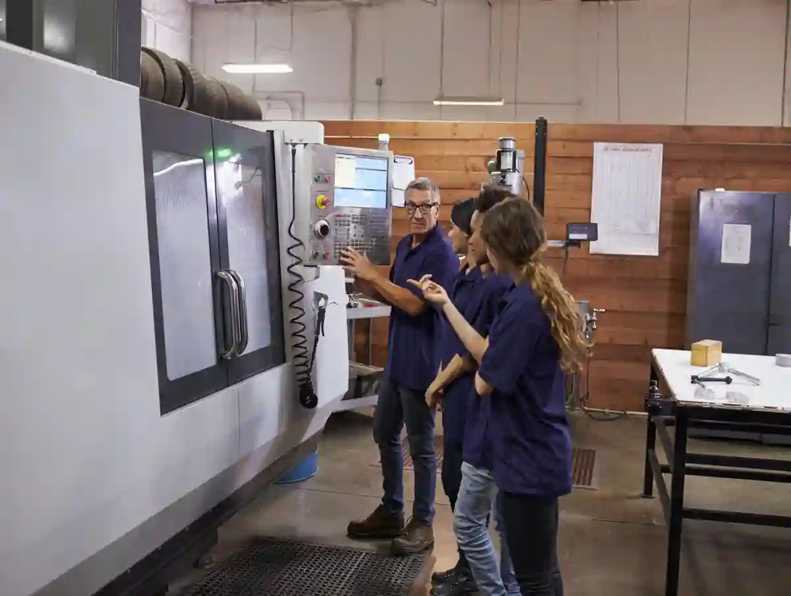
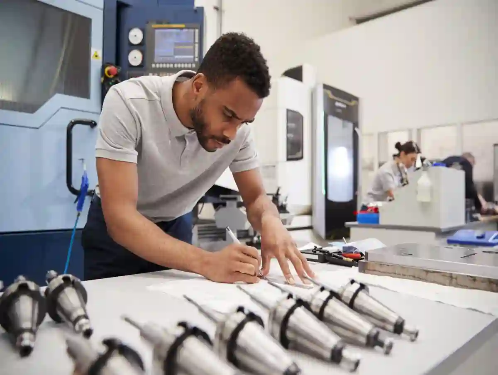
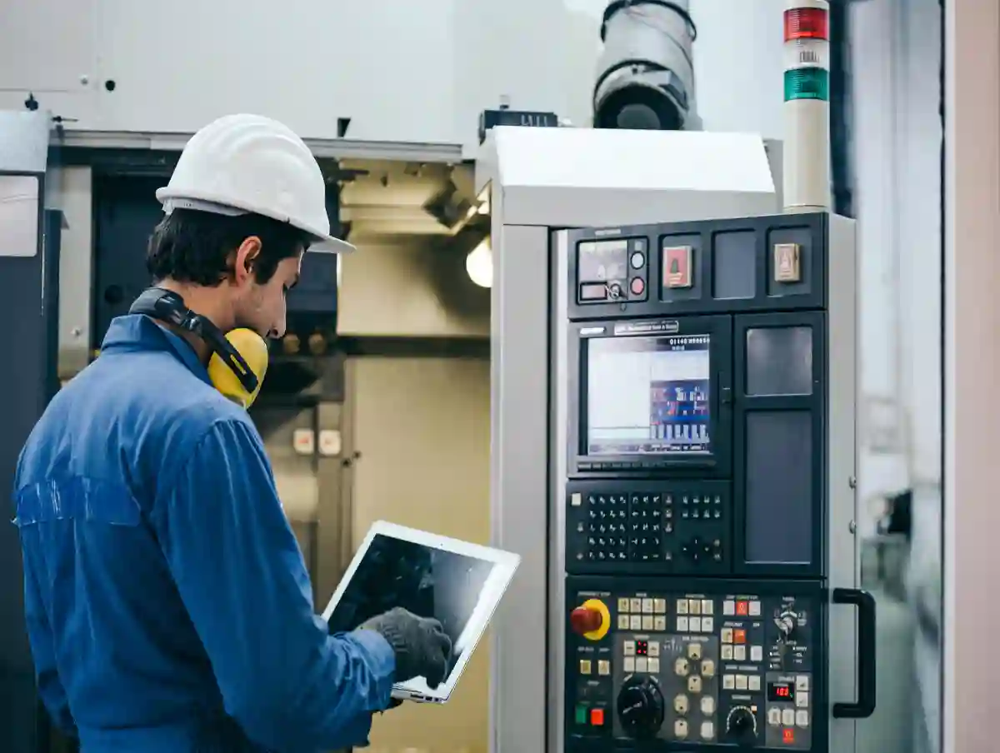

CNC Üretim Maliyetleri İçin Zaman ve Maliyet Optimizasyonu
Modern imalatta rekabet artık yalnızca parçayı üretmekle sınırlı değildir. Aynı parçayı daha kısa çevrim süresiyle, daha düşük fire oranıyla ve daha öngörülebilir kaliteyle üretebilmek gerçek farkı oluşturur. Bu yüzden cnc üretim maliyetleri konusu, yalnızca muhasebe ya da teklif aşamasının değil; tasarımdan bağlamaya, takım seçiminden kalite kontrol düzenine kadar tüm üretim zincirinin ortak meselesidir.
Basit görünen bir parçada bile gereğinden dar tolerans, yanlış operasyon sırası, gereksiz takım değişimi veya fazla bağlama ihtiyacı, toplam maliyeti sessizce yukarı taşır. Üstelik bu artış çoğu zaman ilk bakışta görünmez. Teklifte yalnızca toplam rakam görünür; fakat o rakamın arkasında hazırlık süresi, programlama emeği, işleme zamanı, takım ömrü, ölçüm disiplini ve yeniden işleme riski gibi birçok bileşen vardır.
Özetle cevap nettir: cnc üretim maliyetleri, yalnızca “tezgâh kaç dakika çalıştı” sorusuyla açıklanamaz. Gerçek maliyet; zaman, proses, kalite ve teknik kararların toplam sonucudur.
CNC Üretim Maliyetleri Neden Tek Bir Kalemden Oluşmaz?
Birçok satın alma ekibi ya da teknik olmayan karar verici, CNC fiyatını “ham madde + işçilik” olarak düşünür. Oysa pratikte maliyet yapısı bundan çok daha katmanlıdır. Üretici açısından parça, yalnızca işlenen metal değildir; aynı zamanda planlanan süreçtir.
Bir parçanın maliyeti oluşurken önce teknik resim okunur. Resim ne kadar açık, üretilebilir ve fonksiyon odaklıysa fiyat o kadar netleşir. Ölçü, tolerans, yüzey pürüzlülüğü, delik eksenleri, referans yüzeyler ve varsa ısıl işlem ya da kaplama talepleri henüz talaş kaldırılmadan maliyetin temelini oluşturur. Bu aşama zayıfsa üretici risk payı ekler. Risk payı arttıkça teklif yükselir.
İkinci katman proses planlamasıdır. Parça torna mı ister, freze mi ister, yoksa her iki operasyonu birlikte mi gerektirir? Tek bağlamada mı işlenebilir, ara bağlama gerekir mi? Kaba işleme ile finisaj aynı kurgu içinde mi yürütülmeli? Bu soruların her biri doğrudan süreye etki eder. Süre uzadıkça cnc üretim maliyetleri yükselir.
Üçüncü katman takım ve takım yolu tarafıdır. Aynı geometri iki farklı stratejiyle işlenebilir; biri daha hızlı ama takım aşınmasını yükselten, diğeri daha dengeli fakat daha uzun süren bir yol izleyebilir. Burada doğru tercih yalnızca dakikayı değil, kalite sürekliliğini de belirler.
Dördüncü katman kalite kontrol düzenidir. Parça fonksiyonu kritikse yalnızca final ölçüm yetmez; proses içi kontrol gerekebilir. Proses içi ölçüm, parça başına ek süre demektir. Fakat çoğu zaman bu ek süre, hurda ve revizyonu azaltarak toplam maliyeti aşağı çeker. Yani her ek kontrol maliyeti yükseltmez; doğru kullanılırsa maliyeti dengeler. Bu çerçeveyi daha geniş üretim perspektifinde görmek için CNC Üretim Teknolojileri içindeki süreç odaklı yazılar, planlama bakışını tamamlar.

Görünmeyen Maliyetler Nerededir?
Görünmeyen maliyetlerin başında hazırlık süresi gelir. Operatörün tezgâhı ayarlaması, takım ofsetlerini girmesi, bağlama ekipmanını hazırlaması ve ilk parça doğrulamasını yapması üretimin doğal parçasıdır. Dışarıdan bakıldığında “üretim başlamadı” gibi görünür; ama aslında maliyet çoktan işlemeye başlamıştır.
Bir diğer görünmeyen alan takım aşınmasıdır. Özellikle sert malzemelerde, dar toleranslarda ya da kötü tasarlanmış geometriye sahip parçalarda takım ömrü kısalır. Takım değişim sıklığı arttıkça yalnızca sarf maliyeti değil, zaman kaybı da artar. Bu yüzden cnc maliyet analizi yapılırken takımın kaç parçada değişeceği göz ardı edilmemelidir.
Kalite kaynaklı görünmeyen maliyet ise yeniden işleme ve firedir. Ucuz görünen ama proses kararlılığı düşük üretim modeli, teklif aşamasında cazip olabilir. Ancak sonradan çıkan uygunsuzluklar, teslimat gecikmeleri ve yeniden işleme yükü, toplam maliyeti başlangıçtaki “pahalı” seçeneğin bile üzerine çıkarabilir.
Zaman Neden Doğrudan Paraya Dönüşür?
CNC üretimde zaman, yalnızca takvimde geçen süre değildir. Zaman; makine meşguliyeti, operatör odağı, takım kullanımı ve kalite çevriminin toplamıdır. Bir parçanın çevrim süresi uzadığında aynı makinede işlenebilecek diğer parçaların kapasitesi de daralır. Bu nedenle cnc üretimde zaman tasarrufu, sadece teslim süresini kısaltmaz; makine başına verimliliği yükselterek birim maliyeti de düşürür.
Burada önemli olan daha hızlı olmak değil, daha verimli olmaktır. Aşırı agresif parametreler takım kırar, yüzeyi bozar ya da ölçü kaçırırsa görünürde kazanılan saniyeler toplam süreçte kayba dönüşür. Doğru yaklaşım; kararlı, tekrarlanabilir ve ölçülebilir zaman kazancıdır.
CNC Üretim Maliyeti Nasıl Düşürülür?
“Cnc üretim maliyeti nasıl düşürülür?” sorusunun en doğru cevabı şudur: Maliyet, üretim başladıktan sonra değil; tasarım ve proses kararları alınırken düşürülür. Tezgâh başında yapılan optimizasyon önemlidir, fakat asıl kazanç çoğu zaman çizim masasında başlar.
Bir parçanın maliyetini düşürmenin en etkili yolu, fonksiyona hizmet etmeyen karmaşıklığı temizlemektir. Üretim açısından zor ama kullanım açısından anlamsız detaylar, fark edilmeden maliyeti büyütür. İnce cidarlar, gereksiz derin cepler, standart dışı radyüsler, özel takım gerektiren köşeler ve fonksiyonla ilgisiz dar toleranslar bu grubun tipik örnekleridir.
Maliyet düşürme yaklaşımı, kaliteyi düşürmek anlamına gelmez. Tersine doğru optimizasyon, kaliteyi koruyarak gereksiz maliyeti ayıklar. Bu yüzden cnc üretim maliyeti nasıl düşürülür sorusunu “nereden kısmalıyım?” şeklinde değil, “neredeki teknik gereklilik gerçekten kritik?” şeklinde sormak gerekir.

Tasarım Sadeleştirme En Büyük Kazanç Alanıdır
Bir parçanın toplam maliyeti üzerinde en yüksek etkilerden biri geometri karmaşıklığıdır. Karmaşık geometri daha fazla takım yolu, daha yavaş ilerleme, daha hassas bağlama ve daha fazla ölçüm gerektirir. Bu da zamanın uzaması anlamına gelir.
Örneğin iç köşelerde gereğinden küçük radyüsler kullanmak, standart takımlarla hızlı işlenebilecek bir yüzeyi özel takım ihtiyacına dönüştürebilir. Benzer şekilde yalnızca estetik amaçlı ama fonksiyon taşımayan kademeler, pahlar veya karmaşık yüzey geçişleri operasyon sayısını artırır. Eğer parçanın fonksiyonuna katkı yoksa, bu detaylar çoğu zaman maliyet yüküdür.
Bu yüzden üretim dostu tasarım, maliyet optimizasyonunun ilk adımıdır. Üretim dostu tasarım; standart takım kullanımı, daha az bağlama, daha kısa takım yolu ve daha kolay ölçüm anlamına gelir. Bu dört unsur birlikte çalıştığında cnc üretim maliyetleri üzerinde ciddi düşüş sağlanır.
Tolerans Fonksiyon Kadar Dar Olmalıdır
CNC dünyasında sık görülen bir hata, tüm kritik olmayan ölçülere de çok dar tolerans vermektir. Oysa tolerans, parçanın teknik gereğine göre belirlenmelidir. Bir yüzey montaj uyumu için kritik değilse veya o delik yalnızca geçiş amacı taşıyorsa, dar tolerans vermek maliyet üretir ama değer üretmez.
Dar tolerans; daha düşük ilerleme, daha kontrollü kaba-finisaj ayrımı, daha sık ölçüm ve daha yüksek proses disiplini demektir. Bu şartlar elbette bazı parçalar için gereklidir. Ancak gereksiz kullanıldığında cnc üretim fiyatlandırması üzerinde doğrudan baskı kurar.
Buradaki doğru yaklaşım şudur: Fonksiyonel olarak kritik ölçülere hassasiyet, diğer alanlara ise kontrollü esneklik tanımlanmalıdır. Böylece kalite korunur, ama bütün parça gereksiz şekilde “yüksek hassasiyetli” muamelesi görmez.
Malzeme Seçimi Yalnızca Kilogram Fiyatı Değildir
Maliyet düşürmek isteyen birçok firma önce ham madde fiyatına bakar. Oysa gerçek tablo daha geniştir. Malzeme yalnızca satın alma bedeliyle değil, işlenebilirliğiyle de maliyeti belirler.
Daha ucuz görünen ama zor işlenen bir malzeme; daha uzun çevrim süresi, daha yüksek takım aşınması ve daha sık ölçüm ihtiyacı doğurabilir. Sonuçta kilogram bazında kazanılan rakam, işleme tarafında fazlasıyla geri verilebilir. Tam tersi durumda ise nispeten pahalı ama işlenebilirliği yüksek bir malzeme toplam maliyeti aşağı çekebilir.
Bu yüzden cnc parça maliyet hesaplama yapılırken malzeme kararı tek başına satın alma biriminin değil, üretim ve mühendislik tarafının da değerlendirmesiyle verilmelidir.
Üretim Adedi Doğru Okunmalıdır
Tek adet bir parça ile yüz adet aynı parça aynı mantıkla fiyatlandırılamaz. Çünkü ilk parçada hazırlık, programlama ve doğrulama yükü büyüktür. Seri üretimde ise bu sabit efor çok sayıda parçaya dağılır. Bu nedenle düşük adetli işlerde birim maliyet doğal olarak yüksektir.
Burada kritik nokta şudur: Eğer parça tekrar siparişe konu olacaksa ilk üretimde standart proses kurmak, takım listesini oturtmak ve fikstür mantığını netleştirmek ilerleyen siparişlerde çok ciddi avantaj sağlar. Yani bazı durumlarda ilk siparişte yapılan mühendislik yatırımı, sonraki siparişlerde kâra dönüşür.
CNC Parça Maliyet Hesaplama Nasıl Yapılır?
Sağlıklı bir cnc parça maliyet hesaplama çalışması, tek satırlık formülle yapılmaz. Yine de karar vermeyi kolaylaştıran pratik bir çerçeve vardır:
Toplam maliyet = hazırlık + programlama + bağlama + işleme süresi + takım tüketimi + kalite kontrol + ikincil işlemler + paketleme/lojistik + risk payı
Bu formüldeki her bileşen proje bazında değişir. Aynı ölçüde iki parça, farklı malzeme, farklı tolerans ve farklı bağlama ihtiyacı nedeniyle tamamen ayrı bütçelere çıkabilir. Bu yüzden cnc parça maliyet hesaplama çalışmasında sayı üretmek kadar, o sayının neden oluştuğunu görmek de önemlidir.
Hazırlık ve Programlama Maliyeti
Bir CNC işinin en az görünen ama en belirleyici kısmı hazırlıktır. CAM programı oluşturmak, takım listesini planlamak, operasyon sırasını belirlemek, bağlama mantığını tasarlamak ve ilk parça için doğrulama akışını kurmak ciddi emek ister. Özellikle özel parçalarda bu emek büyür.
Tek adet ya da düşük adet üretimlerde hazırlık maliyetinin birim parçaya etkisi yüksektir. Çünkü sabit mühendislik eforu az sayıda parçaya bölünür. Bu nedenle düşük adetli işlerin “küçük iş” gibi görülmesi yanıltıcıdır; çoğu zaman hazırlık yükü yüksektir.
İşleme Süresi ve Makine Zamanı
Makine zamanı çoğu teklifin ana omurgasını oluşturur. Çevrim süresini belirleyen temel unsurlar ise parça geometrisi, kesme parametreleri, takım yolu, bağlama sayısı ve ölçüm duraklarıdır. Parça ne kadar uzun süre tezgâhta kalırsa, cnc üretim maliyetleri o kadar yükselir.
Ancak burada önemli bir ayrım vardır. Kısa çevrim süresi her zaman iyi değildir; ölçü kaçıran, takım ömrünü azaltan ya da yüzeyi bozan agresif strateji toplam süreçte daha pahalı olabilir. Sağlıklı maliyet hesabı, kararlı çevrim süresini esas almalıdır.
Takım Tüketimi ve Sarf Giderleri
Takım maliyeti bazı projelerde küçük görünür; fakat sert malzeme, karmaşık geometri ya da dar tolerans varsa hızla büyür. Takımın yalnızca satın alma bedeli değil, parça başına ne kadar ömür bıraktığı da hesaba katılmalıdır.
Örneğin aynı operasyon için bir takım daha pahalı olabilir ama iki kat uzun ömür sağlıyorsa toplam maliyet avantajı yaratır. Bu yüzden cnc maliyet analizi yapılırken “ucuz takım” yerine “parça başına doğru takım maliyeti” mantığı kullanılmalıdır.
Ölçüm, İkincil İşlem ve Son İşlemler
Çoğu maliyet hesabında yalnızca ana işleme düşünülür. Oysa parça bittikten sonra ölçüm, çapak alma, yıkama, markalama, kaplama hazırlığı, montaj kontrolü gibi aşamalar da zaman ve işçilik yaratır. Bazı parçalar için bu aşamalar ana işleme kadar kritik olabilir.
Özellikle müşteri çiziminde detaylı kontrol planı isteniyorsa, kalite tarafı teklifin önemli kısmını oluşturur. Burada hata yapmak, teklifi düşük gösterir ama uygulamada kârlılığı bozar.
Pratik Bir Okuma Örneği
Diyelim ki silindirik bir çelik parça üretiyorsunuz. İlk bakışta parça basit görünür. Fakat teknik resimde iki kritik çap, hassas eş merkezlilik, ince yüzey pürüzlülüğü ve çapraz delik varsa tablo değişir. Torna operasyonu dışında ikinci bağlama, delik işlemi, ek kontrol ve belki özel aparat gerekir. Yani “basit parça” algısı yanıltıcıdır.
Bir başka örnekte prizmatik bir alüminyum parça düşünelim. Malzeme daha kolay işlenir, takım aşınması daha düşüktür. Fakat parça üzerinde çok sayıda cep, kör delik ve farklı derinlikte yüzey varsa çevrim süresi yine büyür. Demek ki maliyet yalnızca malzeme değil, geometri ve proses ilişkisiyle belirlenir.
Bu yüzden cnc parça maliyet hesaplama yaklaşımı, parça resmi görülmeden kesin cevap üretmez. Doğru yöntem, maliyet kalemlerini görünür hale getirip hangi unsurun baskın olduğunu belirlemektir.
CNC Üretim Fiyatlandırması Nasıl Daha Sağlıklı Yapılır?
Doğru cnc üretim fiyatlandırması, yalnızca üreticinin değil alıcının da işini kolaylaştırır. Şeffaf fiyatlandırma; hangi operasyonun, hangi riskin ve hangi kalite gereğinin teklifi büyüttüğünü netleştirir. Böylece fiyat pazarlığı “indirim isteği” seviyesinde kalmaz, teknik iyileştirme konuşmasına dönüşür.
En sağlıklı fiyatlandırma, çizim inceleme notlarıyla birlikte sunulan fiyatlandırmadır. Üretici hangi alanı riskli gördüğünü, hangi toleransın ek zaman yarattığını ve hangi revizyonun maliyet avantajı sağlayacağını açıkça belirttiğinde teklif gerçek anlamda değer üretir. Fiyatı oluşturan kırılımları teklif mantığıyla birlikte okumak için CNC İmalat Fiyatları Neye Göre Belirlenir? yazısı bu başlığı tamamlayıcı biçimde okunabilir.
CNC Üretimde Zaman Tasarrufu Nasıl Sağlanır?
Cnc üretimde zaman tasarrufu, maliyet düşürmenin en görünür ama en yanlış anlaşılan alanlarından biridir. Çünkü birçok işletme zaman kazanmayı yalnızca makinayı daha hızlı çalıştırmak sanır. Oysa gerçek zaman tasarrufu çoğu zaman akışın iyileştirilmesiyle gelir.
Bir operatörün takım araması, bağlama aparatı beklemesi, program revizyonu için durması veya ilk parça onayı geciktiği için hattın boş kalması; bunların her biri üretim süresine eklenir. Makine kesim yapmıyorken de zaman kaybı devam eder. Bu nedenle cnc üretimde zaman tasarrufu yalnızca kesme anının değil, tüm hazırlık ve destek süreçlerinin optimizasyonudur. Operasyon sayısı, takım seçimi ve çevrim süresi üzerindeki baskıyı daha detaylı görmek için Talaşlı İmalat Fiyatlarını Etkileyen Faktörler içeriğiyle birlikte değerlendirme yapılabilir. Takım yolu doğrulaması ve simülasyon temelli iyileştirmelerin önemini görmek için Sanal Ortamda Talaşlı İmalat ve CNC Sistem Tasarımı içeriği dikkat çekici bir teknik referans sunar.

CAD/CAM Entegrasyonu ve Takım Yolu Optimizasyonu
İyi hazırlanmış CAM stratejisi, çevrim süresini düşürürken takım ömrünü de koruyabilir. Kötü hazırlanmış takım yolu ise gereksiz hava kesimi, fazla geri çekme, kötü giriş-çıkış hareketleri ve dengesiz paso yükleri yaratır. Sonuç: daha uzun süre, daha fazla takım tüketimi, daha yüksek risk.
Bu nedenle cnc üretimde zaman tasarrufu için ilk bakılacak alan, takım yolunun akışıdır. Parça üstündeki gerçek kesme süresi ile programın toplam süresi arasındaki fark ne kadar açılıyorsa, verimsizlik o kadar büyüktür.
Tek Bağlamada Daha Fazla İş Yapmak
Bağlama sayısı arttıkça yalnızca zaman değil, hata ihtimali de artar. Her yeni bağlama; referans kayması, operatör yorumu ve ek kontrol ihtiyacı demektir. Mümkün olan yerlerde tek bağlamada daha fazla işlem yapmak, hem zaman hem kalite tarafında önemli avantaj üretir.
Bu her parçada mümkün değildir. Fakat fikstür mantığı doğru kurulduğunda, özellikle tekrar eden siparişlerde bağlama sayısını azaltmak cnc üretim maliyetleri üzerinde doğrudan etki yaratır. Çünkü daha az bağlama, daha kısa hazırlık ve daha düşük ölçü riski anlamına gelir.
Takım Standardizasyonu ve Ön Hazırlık
Sürekli farklı takım setleriyle çalışan atölyelerde kurulum süresi uzar. Standart takım mantığı ise hazırlığı hızlandırır. Operatör neyi, ne zaman ve hangi offset düzeninde kullanacağını bildiğinde süre kaybı azalır.
Aynı şekilde ön ayarlı takım, hazır aparat, standart iş sırası ve dijital kontrol listeleri üretimi sakinleştirir. Kaotik çalışan atölye dışarıdan hızlı görünebilir; ancak gerçekte zaman kaybı yüksektir.
Proses İçi Ölçüm Zaman Kaybettirmez, Zaman Kazandırır
Yüzeysel bakışla bakıldığında ölçüm, üretimi yavaşlatan bir adım gibi görünür. Fakat hatalı bir parçayı en sonda fark etmek, çoğu zaman birkaç ara ölçümden çok daha pahalıdır. Bu nedenle kritik ölçülerde proses içi doğrulama, özellikle seri işlerde toplam zaman kazancı sağlar.
Burada amaç her parçayı uzun uzun ölçmek değil; sapma eğilimini erkenden yakalamaktır. Takım aşınması, ısıl etkiler veya bağlama kaynaklı küçük kaymalar erken fark edildiğinde proses devam eder. Fark edilmediğinde ise tüm parti riske girer.
CNC Üretim Fiyatlandırması Yapılırken Hangi Teknik Parametreler Dikkate Alınmalıdır?
Sağlıklı cnc üretim fiyatlandırması için şu soru mutlaka sorulmalıdır: Bu fiyat, hangi teknik varsayımlara göre verildi? Çünkü iki üretici aynı çizime aynı rakamı vermese de ikisi de yanlış olmayabilir; sadece farklı varsayımlarla hesap yapıyor olabilirler.
Bir üretici toleransı kritik kabul edip ara ölçüm ekler. Diğeri daha düşük risk payı yazar ama süreçte sorun yaşama olasılığı yüksektir. Bir üretici takım maliyetini açıkça hesaba katar. Diğeri daha düşük teklif verir fakat ilk revizyonda fiyat güncellemesi ister. Bu yüzden cnc üretim fiyatlandırması teknik kapsamla birlikte okunmalıdır.
Fiyatlandırmada dikkat edilmesi gereken ana başlıklar; malzeme standardı, operasyon sayısı, çevrim süresi, takım ömrü, bağlama ihtiyacı, tolerans seviyesi, yüzey kalitesi, kalite planı ve teslim modelidir. Bu dokuz başlık net değilse teklifin güvenilirliği de düşer. Kalite disiplininin maliyet üzerindeki etkisini anlamak için TS EN ISO 9001 Kalite Yönetim Sistemi yaklaşımı, süreç standardizasyonunun neden kritik olduğunu somutlaştırır.
CNC Maliyet Analizi Satın Alma Kararlarını Nasıl Güçlendirir?
İyi bir cnc maliyet analizi, fiyat kıyaslamasından daha fazlasını yapar. Hangi teklifin neden düşük olduğunu, hangi teklifin nerede risk taşıdığını ve hangi tedarikçinin uzun vadede daha sürdürülebilir sonuç vereceğini görünür kılar.
Satın alma tarafının en büyük hatası, tüm teklifleri aynı teknik zeminde sanmaktır. Oysa biri yalnızca ana işleme süresini, diğeri ise kalite ve risk maliyetini de hesaba katıyor olabilir. Bu durumda rakamları yan yana koymak yeterli değildir; teklif içeriğini çözmek gerekir.
Burada toplam sahip olma maliyeti yaklaşımı kritik hale gelir. İlk siparişte ucuz görünen ama sürekli revizyon çıkaran, teslimat aksatan veya yeniden işleme yaratan model, uzun vadede pahalıdır. Biraz daha disiplinli ve kontrollü süreç ise başlangıçta yüksek görünse de toplam maliyeti aşağı çekebilir. Düşük adetli, prototip ya da teknik riski yüksek işlerde maliyetin neden farklılaştığını görmek için Özel Parça İmalatı Fiyatlarını Etkileyen Faktörler yazısını inceleyebilirsiniz. Makine, yazılım ve donanım yatırımlarının verimlilik tarafına nasıl taşınabildiğini görmek için KOBİ Dijital Dönüşüm Destek Programı sayfası da incelenebilir.

Tedarikçi Seçiminde Sadece Fiyata Bakmak Neden Yanlıştır?
CNC üretimde tedarikçi seçimi, yalnızca fiyat satın almak değildir; süreç satın almaktır. Üreticinin teknik iletişim kalitesi, çizim yorumlama yaklaşımı, proses disiplini ve kalite alışkanlığı fiyat kadar önemlidir.
İyi üretici, maliyeti kör biçimde büyüten noktaları size söyler. Hangi toleransın gereksiz sert olduğunu, hangi geometri değişikliğinin süre kazandıracağını, hangi operasyonun farklı sırayla daha verimli yapılacağını teknik gerekçeyle anlatır. Bu yaklaşım, gerçek cnc maliyet analizi kültürünün göstergesidir.
Tekrarlayan Siparişlerde Asıl Kazanç Nerede Oluşur?
Tekrarlayan işlerde en büyük avantaj, ilk üretimde öğrenilen sürecin standartlaşmasıdır. Program oturur, takım listesi netleşir, bağlama mantığı sabitlenir, ölçüm noktaları belirlenir. Böylece sonraki siparişlerde hem süre kısalır hem maliyet daha öngörülebilir hale gelir.
Bu yüzden seri ya da dönemsel tekrar potansiyeli olan işlerde ilk siparişi yalnızca parça teslimi olarak görmek yanlıştır. İlk sipariş aynı zamanda proses yatırımıdır. Bu yatırımı doğru yapan üretici, sonraki partilerde maliyet avantajını daha rahat yaratır.
Sık Sorulan Sorular
CNC Üretim Maliyeti Nasıl Düşürülür Sorusunda İlk Bakılacak Yer Neresidir?
İlk bakılacak yer çizimdir. Fonksiyona katkısı olmayan karmaşık geometri, gereksiz dar tolerans ve standart dışı detaylar maliyeti büyütür. Ardından operasyon sırası, bağlama sayısı ve takım yolu gözden geçirilmelidir.
CNC Parça Maliyet Hesaplama İçin Tek Bir Formül Yeterli Midir?
Hayır. Formül iskelet sunar; fakat gerçek sonuç için teknik resim, malzeme, adet, tolerans, takım tüketimi ve kalite planı birlikte değerlendirilmelidir. Aksi halde rakam çıkar ama doğru maliyet okunmaz.
CNC Üretimde Zaman Tasarrufu En Çok Hangi Noktalarda Elde Edilir?
En büyük tasarruf çoğu zaman hava kesimlerinin azaltılması, bağlama sayısının düşürülmesi, standart takım düzeni kurulması ve proses içi sapmaların erken yakalanmasıyla elde edilir.
CNC Üretim Fiyatlandırması Neden Firmadan Firmaya Değişir?
Çünkü her firma aynı riski, aynı kalite seviyesini ve aynı hazırlık yükünü aynı biçimde hesaplamaz. Mühendislik yaklaşımı ve süreç disiplini farklılaştıkça fiyatlandırma mantığı da değişir.
Sonuç
Bugün cnc üretim maliyetleri üzerine doğru düşünmek, yalnızca daha ucuz üretim aramak değildir. Asıl hedef; zamanı, kaliteyi ve teknik gerekliliği birlikte yöneten bir üretim modeli kurmaktır. Bu modelde tasarım sadeleşir, tolerans fonksiyon kadar dar tutulur, takım yolu gereksiz hareketten arındırılır, bağlama sayısı azaltılır ve kalite kontrol sürecin doğal parçası haline gelir.
Doğru kurgulanmış bir sistemde cnc üretim maliyetleri düşerken kalite zayıflamaz; aksine süreç daha öngörülebilir hale gelir. Bu da hem üretici hem satın alma tarafı için daha güvenli, daha sürdürülebilir ve daha rekabetçi bir yapı oluşturur.
Son söz olarak şunu net söylemek gerekir: cnc maliyet analizi yapmadan verilen her karar, çoğu zaman yalnızca fiyat seçimi olur. Oysa güçlü üretim kararı, fiyatın arkasındaki tekniği okuyabilen karardır. Silindirik geometrilerde çevrim süresi, takım ömrü ve proses disiplini ilişkisini sahaya daha yakın okumak için CNC Tornalama hizmet sayfası da destekleyici bir referansdır! Dijital olgunluk ve üretim verimliliği perspektifini genişletmek isteyen firmalar için DDX Dijital Dönüşüm Değerlendirme Modeli yararlı bir dış referans niteliğindedir.